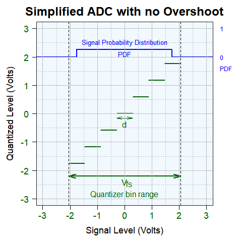
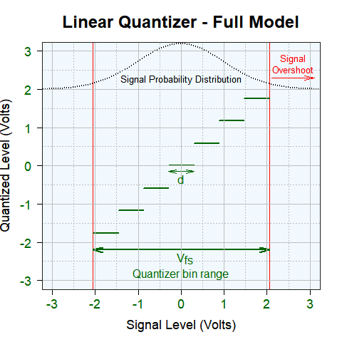

Marcel Merchat
RF and Microwave Engineer
Model A |
|  |
The probability distribution for the 1-Volt rms random signal is a uniform and flat for Model A. All measurements fall within the bins with no overshoot. The width of the distribution does not fully cover the last bin. This is necessary for comparison with the random distribution for Method B. |
\[\sigma^2 = E\{X^2\} = \int_{-\frac{d}{2}}^{\frac{d}{2}} {(x-x_i)^2} \cdot \frac{1}{d} \; dx\]
## [1] "Q = 169.16 mV RMS"
paste("SNR = ", formatC(1/Q^2, digits = 1, format = "f"), sep="")
## [1] "SNR = 34.9"
paste("SNR = ", formatC(20*log10(1/Q), digits = 2, format = "f"), "-dB", sep="")
## [1] "SNR = 15.43-dB"
Model B |
|  |
The probability distribution for the signal level is a normal bell-shaped one that overshoots the bin range. The standard deviation is 1-Volt. About 95% of the measurements fall directly into the ADC bins and about 5% fall outside or overshoot the available bins. |
inbounds <- i_1$value + i_2$value + i_3$value + i_4$value + i_5$value + i_6$value + i_7$value
paste(formatC(1000*inbounds^0.5, digits = 1, format = "f"), "-mV RMS", sep="")
## [1] "165.5-mV RMS"
paste(formatC(inbounds, digits = 4, format = "f"), "-Watts", sep="")
## [1] "0.0274-Watts"
overlimits1 <- undershoot1$value + overshoot1$value
paste(formatC(overlimits1, digits = 4, format = "f"), "-Watts", sep="")
## [1] "0.0095-Watts"
## [1] "0.0369-Watts"
paste(formatC(1000*(inbounds + overlimits1)^0.5, digits = 1, format = "f"), "-mV rms", sep="")
## [1] "192.1-mV rms"
\[SNR = \frac {s^2}{Distortion} = \frac {1}{Distortion}\]
paste("SNR = ", formatC(10*log10(1/Distortion), digits = 2, format = "f"), "-dB", sep="")
## [1] "SNR = 14.33-dB"